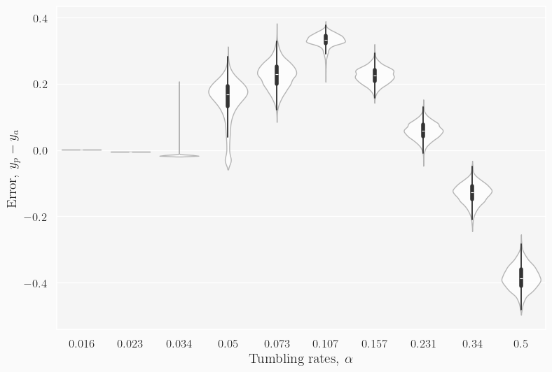

Training with degrees of freedom a.k.a. particle orientation
Hypothesis: Cluster formation occurs when two particles collide head on (so left vs right and up vs down) and form the cluster seed. Due to exclusion, these seeds are jammed, until they tumble away. Hence at the center of the clusters, we expect the network to pick up on these (1-3, 2-4) configurations. At the edges, we expect particles to point towards the clusters. This means there is a difference between the “colourful” and the “monochromatic” one. Because of this, we expect the “cross-prediction” (i.e. taking a dataset with orientation and asking a model trained without orientation for predictions) to perform poorly, as the networks will be looking for something completely differently.
Experiment 1a: inject into the model information on the 4 degrees of freedom and predict with and without this information (i.e. merely positions, this is experiment-like).
Outcome: Prediction without orientation performs much poorer compared to prediction with orientation.
Models:magic7474, buckwheat3306
Experiment 1b: train only on positions and predict on data with and without the degrees of freedom injected.
Outcome: Prediction with orientation fails completely.
Models:failing2399
Plots for training with orientation
Trained on SGD, with a learning rate of 0.008, for 45 epochs.
Code
import osos.chdir("/hades/projects/persistent-exclusion-process/")import numpy as npimport tensorflow as tfimport matplotlib.pyplot as pltfrom src.training_utils import extract_floats, data_load, split_dataset, predict_and_plotfrom src.models import make_netnp.set_printoptions(precision=3, suppress=True)
2024-02-29 17:49:13.302023: E external/local_xla/xla/stream_executor/cuda/cuda_dnn.cc:9261] Unable to register cuDNN factory: Attempting to register factory for plugin cuDNN when one has already been registered
2024-02-29 17:49:13.302093: E external/local_xla/xla/stream_executor/cuda/cuda_fft.cc:607] Unable to register cuFFT factory: Attempting to register factory for plugin cuFFT when one has already been registered
2024-02-29 17:49:13.337158: E external/local_xla/xla/stream_executor/cuda/cuda_blas.cc:1515] Unable to register cuBLAS factory: Attempting to register factory for plugin cuBLAS when one has already been registered
2024-02-29 17:49:13.415338: I tensorflow/core/platform/cpu_feature_guard.cc:182] This TensorFlow binary is optimized to use available CPU instructions in performance-critical operations.
To enable the following instructions: AVX2 FMA, in other operations, rebuild TensorFlow with the appropriate compiler flags.
2024-02-29 17:49:14.267255: W tensorflow/compiler/tf2tensorrt/utils/py_utils.cc:38] TF-TRT Warning: Could not find TensorRT
2024-02-29 17:52:07.912672: W external/local_tsl/tsl/framework/cpu_allocator_impl.cc:83] Allocation of 1913651200 exceeds 10% of free system memory.

With orientation removed, the model trained on orientation seems to overpredict the orientations, and cannot tell at all what’s happening at high ’s, where it cannot distinguish 0.231 and 0.340 from 0.500.
To visualize what’s going on, here are the snapshots at :
To the human eyes, these are very similar. It is possible the network learns from the orientation here, seeing more 1-3 and 2-4 configurations for the lower values of ’s, since more clustering happens. This would mean removing orientation as information makes the network fail to distinguish.
The regime where it overpredicts is also interesting, although I’m not quite sure why this is happening.
Adding orientation to the snapshots makes the model completely fail to predict any meaningful . It does not predict a single value within the accuracy defined. My guess is that the way the model has learned is to potentially only see blobs as clusters, so when individual pixels can be distinguished from their defining “brightness” (grayscale image with five values 0 (background), 0.25, 0.5, 0.75, 1), it cannot see them as clusters no longer. Instead, a lot of “noise” is now present. Yet, the model was not trained on noise, so it’s not surprising that it cannot handle noise.
Performance between the two experiment
Overall, they perform the same, with loss and different metrics for standard deviation within a similar ball park figure:
in the range .
in the range .
Overlap ratios are both 1.0.
.
I think for experiment-like, it is best to inject noise into the training dataset. Injecting noise reduces overfitting and increases robustness, as it is a form of augmentation.